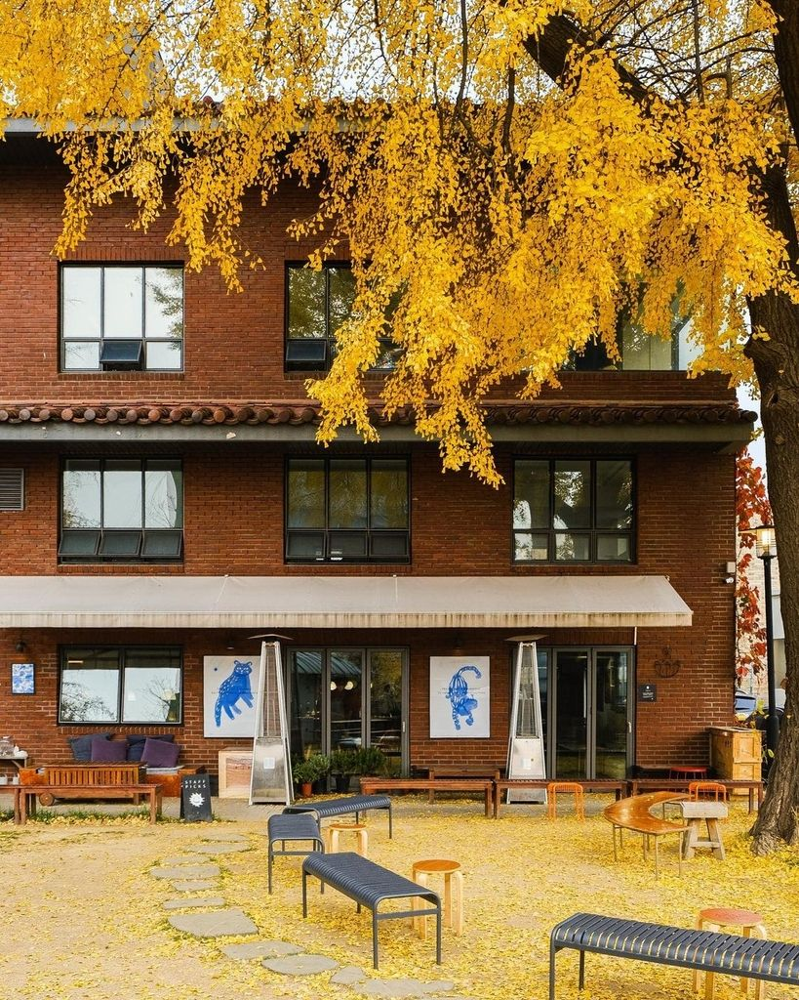
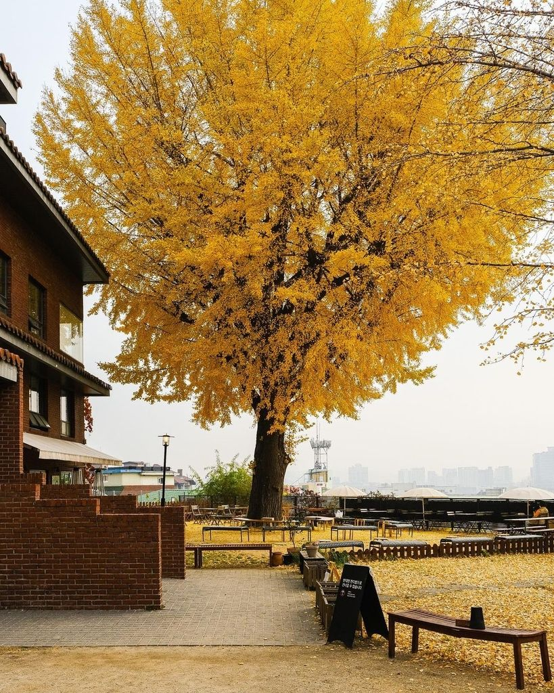

A spacious outdoor terrace cafe near Gyeongbokgung Palace.
You can appreciate the wonderful cityscape of Seoul, giving you a unique atmosphere.
Attractive red brick buildings with stylish interiors.
In particular, there are large ginkgo trees in the outdoor space, adding to the quiet atmosphere of the cafe, and it is recommended to visit especially in autumn when the leaves are golden.
Cafe is dog friendly.
 
background image: author: piao.sho credit: piao.sho, url: , CC-BY.
// https://www.instagram.com/nanpo_official?utm_source=ig_web_button_share_sheet&igsh=ZDNlZDc0MzIxNw%3D%3D